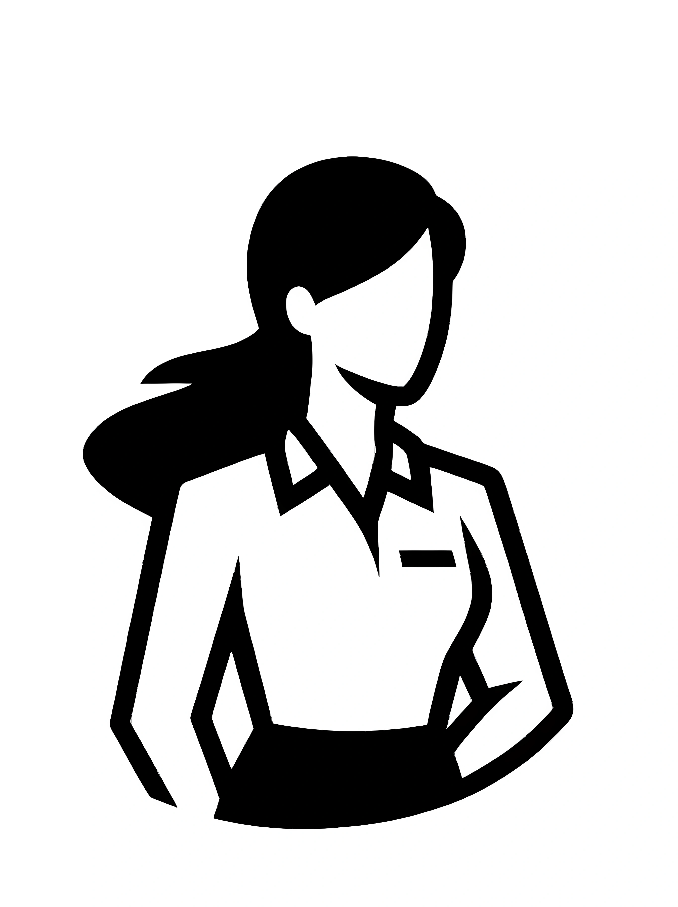
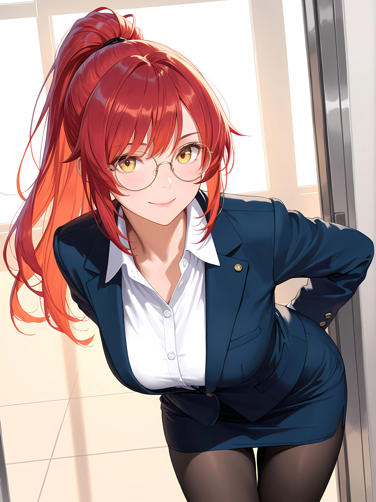
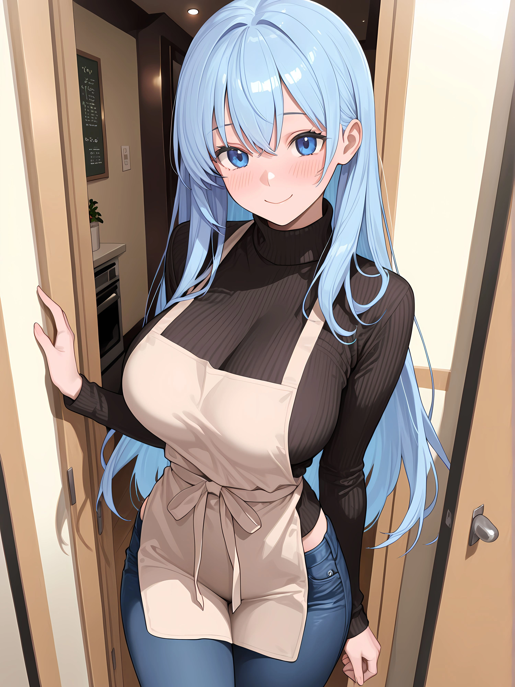
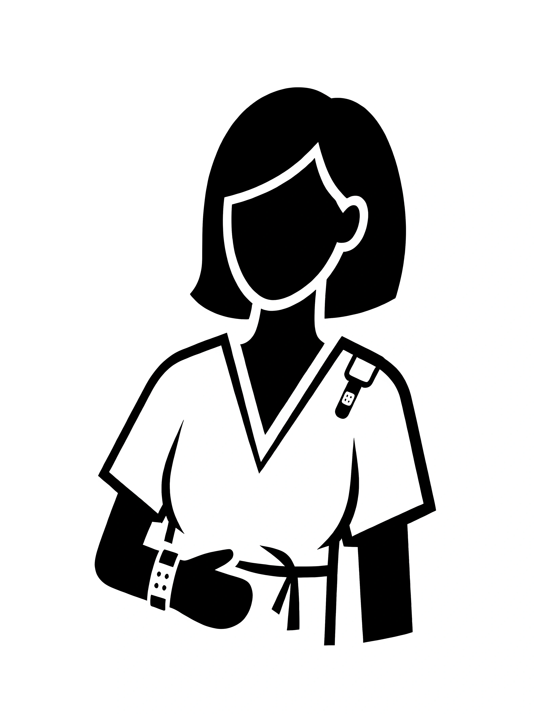
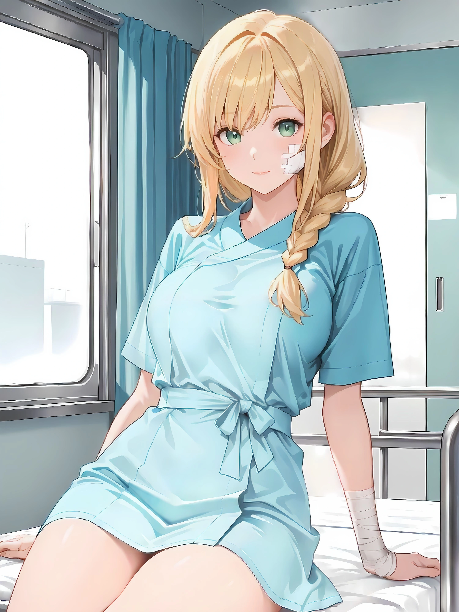

본격 내 맘대로 시작하는 나만의 하렘 로맨스!
오늘도 병원에서는 무슨 일이 일어나고 있을까요?
당신의 선택과 언행에 따라 스토리도 점점 달라집니다. 어떤 역할로 이 병원에 발을 들이시겠습니까?
모든 보살핌을 받는 위치에서 피어나는 아슬아슬한 병실 로맨스
실력과 매력으로 병원을 사로잡는 에이스의 등장
병원의 살림꾼, 그녀들과의 은밀하고 짜릿한 사내 연애
아이콘을 클릭하여 당신의 일상을 뒤흔들 히로인을 확인하세요!
차갑고 완벽주의자 같지만, 내면엔 따뜻함을 숨기고 있는 전문의.
언제나 밝은 미소로 환자들과 동료들에게 비타민이 되어주는 미소천사.


똑부러지는 일 처리와 세련된 외모. 하지만 가끔 보여주는 허당끼가 매력 포인트!

카페의 귀여운 마스코트. 톡톡 튀면서도 세심한 성격으로 병원을 찾는 모든 이들에게 활력을 불어넣는다.


대학교 치어리더 활동 중 팔목 타박상으로 입원한 대학생. 특유의 발랄함과 긍정 에너지로 병실에 활기를 불어넣는다.